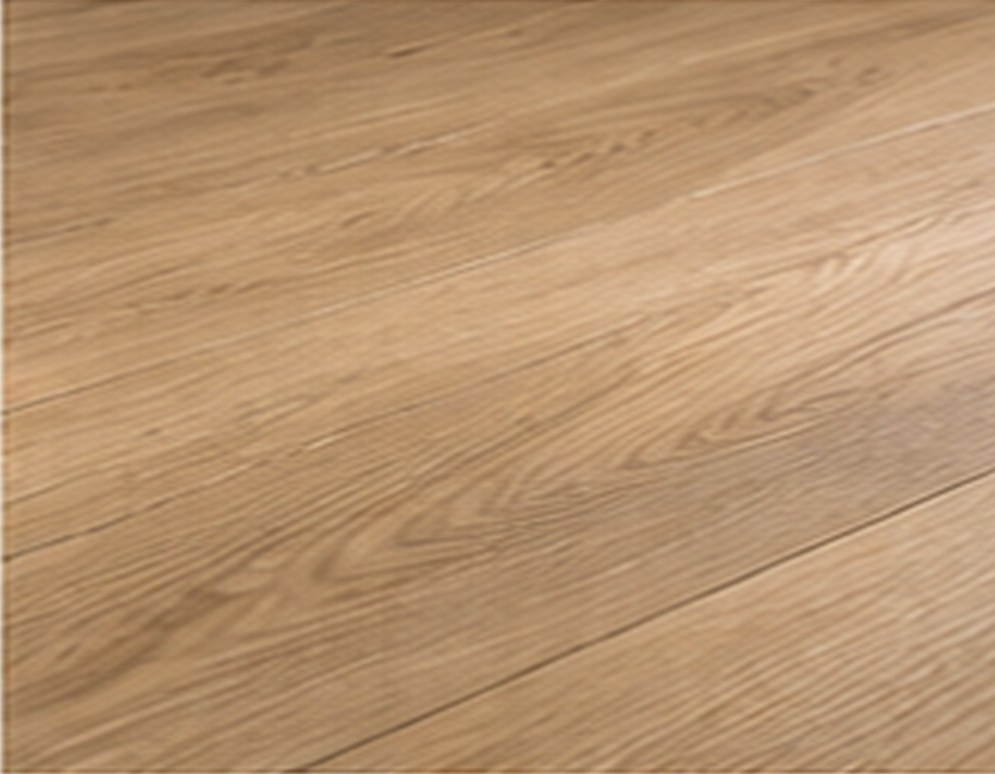

9:41
Hasar karşılaştırma
Salon · Parke zeminFark işaretli


Mutfak · TezgahFark işaretli


Fark notuÇıkış fotoğraflarında parkede ve tezgahta giriş kaydına göre görünür bir fark işaretlenmiş.
Bir fark için görüşünüz farklıysa itiraz notu ekleyebilirsiniz. Not eklendiğinde konu ihtilaf kaydı olarak açılır; fotoğraflar, tarihler ve notlar birlikte saklanır.
İtiraz notu ekle
iOS · M34 Hasar karşılaştırma
9:41
Salon · Parke zeminFark işaretli
Giriş 1 Mart 2026
Mutfak · TezgahFark işaretli
Fark notuÇıkış fotoğraflarında parkede ve tezgahta giriş kaydına göre görünür bir fark işaretlenmiş.
Bir fark için görüşünüz farklıysa itiraz notu ekleyebilirsiniz. Not eklendiğinde konu ihtilaf kaydı olarak açılır; fotoğraflar, tarihler ve notlar birlikte saklanır.
İtiraz notu ekle
Android · M34 Hasar karşılaştırma